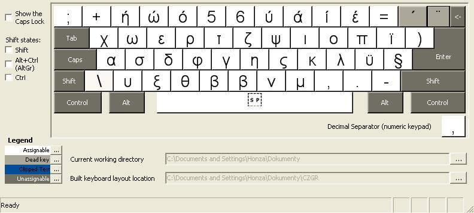
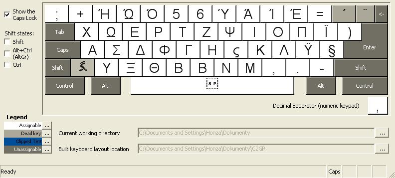
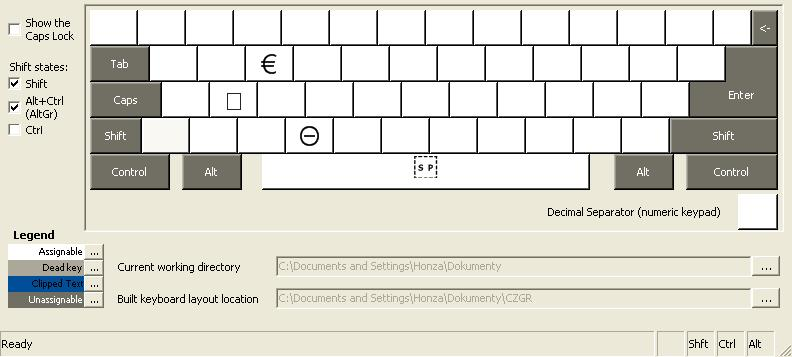

Øecká - rozložení jako latinka (0.9.0) - Dokumentace (3.1)
Rozložení klávesnice
Rozložení klávesnice ve Windows se liší podle toho jestli není stisknuta žádná modifikaèní klávese, je stisknuta klávesa Shift, Caps Lock, Ctrl+Alt, Ctrl+Alt+Shift, Ctrl, Ctrl+Shift, Shift+Caps Lock (poslední tøi možnosti nejsou tímto doplòkem využity a možnost použití kláves v kombinaci se samotnou klávesou Ctrl je nestandardní). U nìkterých kláves je definováno, že shift a caps lock jsou to samé u jiných nikoliv. (Viz pøíklad: Stisknete-li Shift+7 napíše se 7, ale stisknete-li Caps Lock+7 napíše se Ý).
Následují obrázky rozložení vygenerované programem Microsoft Keyboard Layout Creator:
Bez modifikátorù

Zapnutý Caps Lock

Stisknutý Shift
Stisknutý Ctrl+Alt nebo AltGr
Stisknutý Ctrl+Alt+Shift nebo AltGr+Shift

Zapnutý Caps Lock a stisknutý Ctrl+Alt nebo AltGr
Zapnutý Caps Lock a stisknutý Shift
Zapnutý Caps Lock a stisknutý Ctrl+Alt+Shift nebo AltGr+Shift
Žádné další kombinace zejména se samotnou klávesou Ctrl nejsou využity. Poslední dvì kombinace vznikají jako vedlejší produkt.
Malé vysvìtlení k obrázkùm:
Bílé klávesy jsou klávesy vkládající písmena
Prázdná klávesa nevloží nic
Tmavošedé klávesy nelze modifikovat
Svìtlešedé klávesy vkládají znak, který zmìní význam následujícího stisku klávesy (napøíklad háèek, èárka; tzv. Dead key)
Nezobrazené klávesy nelze modifikovat